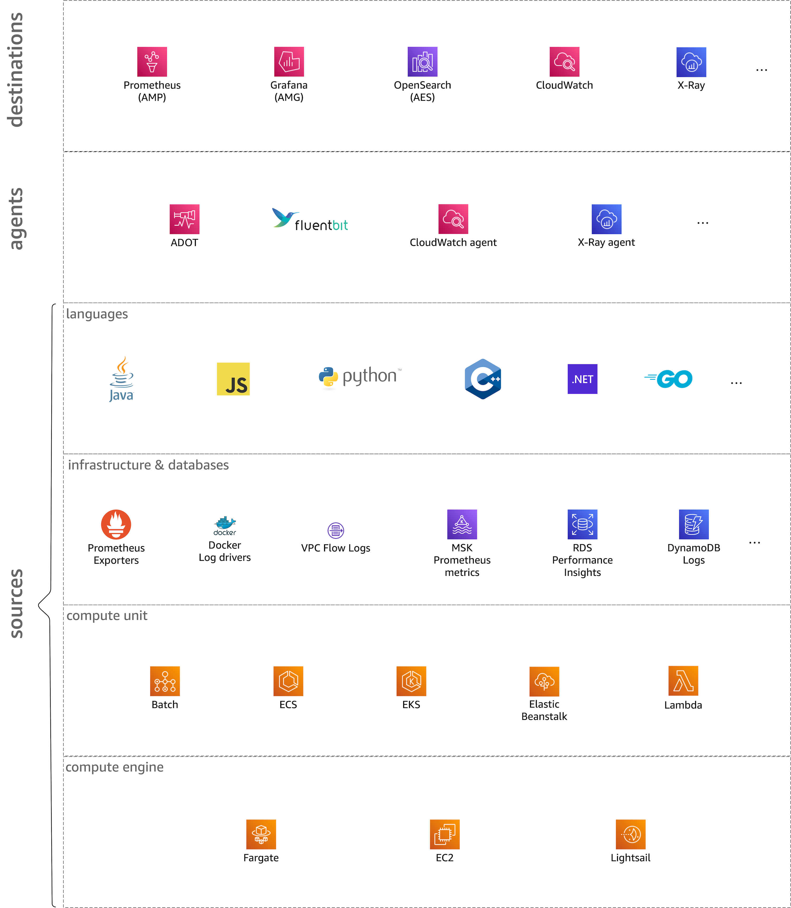
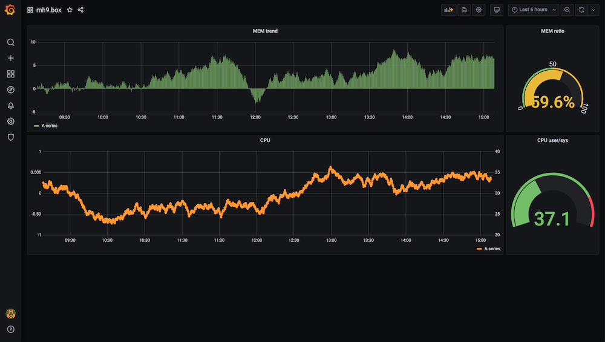

Dimensions¶
In the context of this site we consider the o11y space along six dimensions. Looking at each dimension independently is beneficial from an synthetic point-of-view, that is, when you're trying to build out a concrete o11y solution for a given workload, spanning developer-related aspects such as the programming language used as well as operational topics, for example the runtime environment like containers or Lambda functions.

What is a signal?
When we say signal here we mean any kinds of o11y data and metadata points, including log entries, metrics, and traces. Unless we want to or have to be more specific, we use "signal" and it should be clear from the context what restrictions may apply.
Let's now have a look at each of the six dimensions one by one:
Destinations¶
In this dimension we consider all kinds of signal destinations including long term storage and graphical interfaces that let you consume signals. As a developer, you want access to an UI or an API that allows you to discover, look up, and correlate signals to troubleshoot your service. In an infrastructure or platform role you want access to an UI or an API that allows you to manage, discover, look up, and correlate signals to understand the state of the infrastructure.

Ultimately, this is the most interesting dimension from a human point of view. However, in order to be able to reap the benefits we first have to invest a bit of work: we need to instrument our software and external dependencies and ingest the signals into the destinations.
So, how do the signals arrive in the destinations? Glad you asked, it's …
Agents¶
How the signals are collected and routed to analytics. The signals can come from two sources: either your application source code (see also the language section) or from things your application depends on, such as state managed in datastores as well as infrastructure like VPCs (see also the infra & data section).
Agents are part of the telemetry that you would use to collect and ingest signals. The other part are the instrumented applications and infra pieces like databases.
Languages¶
This dimension is concerned with the programming language you use for writing your service or application. Here, we're dealing with SDKs and libraries, such as the X-Ray SDKs or what OpenTelemetry provides in the context of instrumentation. You want to make sure that an o11y solution supports your programming language of choice for a given signal type such as logs or metrics.
Infrastructure & databases¶
With this dimension we mean any sort of application-external dependencies, be it infrastructure like the VPC the service is running in or a datastore like RDS or DynamoDB or a queue like SQS.
Commonalities
One thing all the sources in this dimension have in common is that they are located outside of your application (as well as the compute environment your app runs in) and with that you have to treat them as an opaque box.
This dimension includes but is not limited to:
- AWS infrastructure, for example VPC flow logs.
- Secondary APIs such as Kubernetes control plane logs.
- Signals from datastores, such as or S3, RDS or SQS.
Compute unit¶
The way your package, schedule, and run your code. For example, in Lambda that's a function and in ECS and EKS that unit is a container running in a tasks (ECS) or pods (EKS), respectively. Containerized environments like Kubernetes often allow for two options concerning telemetry deployments: as side cars or as per-node (instance) daemon processes.
Compute engine¶
This dimension refers to the base runtime environment, which may (in case of an EC2 instance, for example) or may not (serverless offerings such as Fargate or Lambda) be your responsibility to provision and patch. Depending on the compute engine you use, the telemetry part might already be part of the offering, for example, EKS on Fargate has log routing via Fluent Bit integrated.